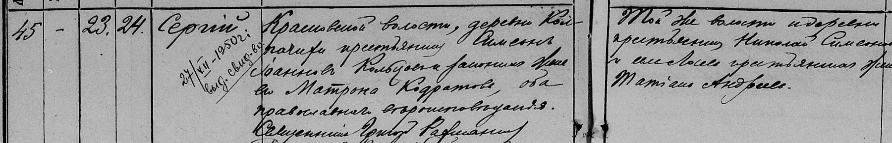
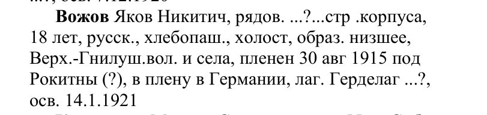
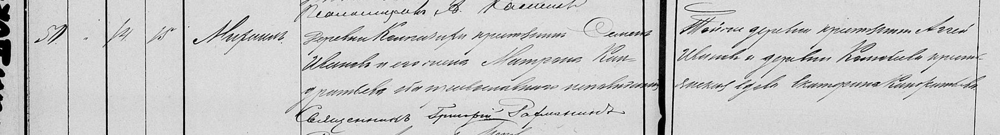
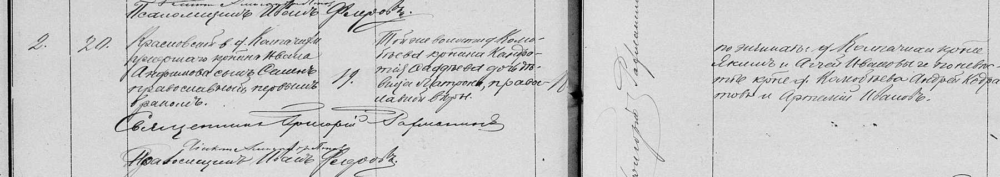
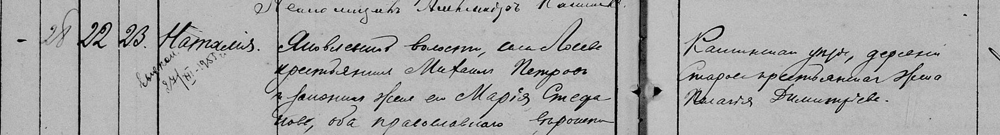
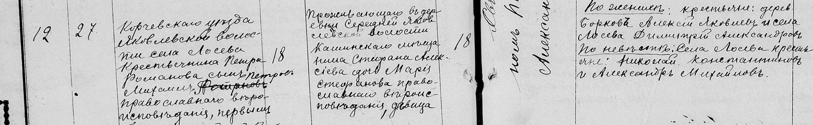
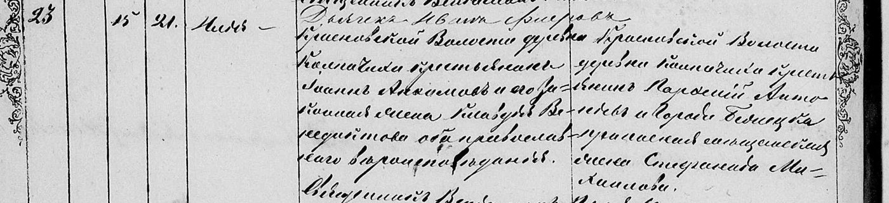

<meta name="robots" content="noindex,nofollow">

<section class="ch" id="ch1" data-nav="Как устроена книга">
  <div class="ch-tag">Глава первая</div>
  <h2>Как устроена эта книга</h2>
  <div class="when">Дубна · Воронежская Гнилуша · тверские Колпачиха и Лосево · Подберезье на Волге · XVIII–XX века</div>

  <p class="first">Мы искали предков трёх родов: Вожовых, Кольцовых и Смолиных, а с ними породнившихся
    Романовых, Звягинцевых, Ивановых и Румянцевых. Вожовы жили в воронежской Гнилуше, Кольцовы
    в тверской Колпачихе, Романовы в соседнем Лосеве, Смолины в Подберезье на Волге. Все три рода сошлись
    в Дубне. Книга идёт от людей, которых семья помнит, назад, к самым ранним предкам, найденным в архивах:
    они жили в конце XVIII века. Книга написана для Александра и Никиты.</p>

  <p>Родство считаем от Александра и Никиты: мама и папа считаются первым поколением предков, дедушки
    и бабушки вторым, прадеды третьим, прапрадеды четвёртым; дальше пишем «предок в пятом поколении» и так далее.</p>

  <h3>Четыре степени уверенности</h3>

  <p>Процент у человека в древе показывает, насколько мы уверены, что он ваш предок, по всей цепочке
    от Александра и Никиты до него. На древе это видно по рамке, в книге по оформлению текста.</p>

  <div class="levels" style="clear:both;display:grid;grid-template-columns:repeat(auto-fit,minmax(200px,1fr));gap:8px;margin:6px 0 20px">
    <div style="padding:12px 14px;border:2px solid var(--accent);border-radius:12px;background:var(--card)">
      <div style="font-size:14px;font-weight:700;margin-bottom:3px">Яркая рамка · 90—100%</div>
      <p style="margin:0;font-size:14.5px;line-height:1.5">Каждое звено подтверждено документом или семьёй. В книге обычный текст.</p>
    </div>
    <div style="padding:12px 14px;border:1.5px solid var(--line);border-radius:12px;background:var(--card)">
      <div style="font-size:14px;font-weight:700;margin-bottom:3px">Бледная рамка · 75—89%</div>
      <p style="margin:0;font-size:14.5px;line-height:1.5">Одно звено доказано не прямо. Рамка «Установлено, нужно подтвердить».</p>
    </div>
    <div style="padding:12px 14px;border:1.5px dashed var(--line);border-radius:12px;background:var(--card)">
      <div style="font-size:14px;font-weight:700;margin-bottom:3px">Бледная с пунктиром · 50—74%</div>
      <p style="margin:0;font-size:14.5px;line-height:1.5">Признаки сходятся, прямой записи нет. Рамка «Вероятно».</p>
    </div>
    <div style="padding:12px 14px;border:1.5px dotted var(--line);border-radius:12px;background:var(--card)">
      <div style="font-size:14px;font-weight:700;margin-bottom:3px">«?» · меньше 50%</div>
      <p style="margin:0;font-size:14.5px;line-height:1.5">Версия для проверки. Рамка «Гипотеза».</p>
    </div>
  </div>

  <p>В каждой рамке сказано, какого документа не хватает; если человека не нашли в архиве, значит, его нет
    в просмотренных книгах, а жить в тех местах он вполне мог.</p>

  <p>Придуманной истории в книге нет: чего не говорят ни документ, ни семья, то названо неизвестным,
    а однофамильцев мы не вносим в древо, пока запись не назовёт человека отцом, сыном, братом или мужем.
    Снимки документов открываются крупно по нажатию.</p>

  <h3>По маминой линии</h3>

  <div style="font-size:12px;letter-spacing:.08em;text-transform:uppercase;color:var(--accent);font-weight:700;margin:14px 0 6px">Вожовы</div>
  <div class="lineage" style="clear:both;display:grid;grid-template-columns:repeat(auto-fill,minmax(250px,1fr));gap:8px;margin:0 0 14px">
      <div style="padding:11px 15px 9px;border:1.5px solid var(--accent);border-radius:12px;background:var(--card)">
        <h4 style="font-size:16.5px;line-height:1.3;margin:0">Юрий Яковлевич Вожов <span style="font-weight:500;color:var(--muted);font-size:14px">· 1944—2025</span></h4>
        <p style="margin:3px 0 4px;font-size:15px;line-height:1.55">Папа Натальи Юрьевны, родился в Павловске. <a href="#ch2" style="color:var(--accent);text-decoration:none;white-space:nowrap">Подробнее →</a></p>
        <div style="font-size:12.5px;color:var(--muted)" title="яркая рамка">дедушка · 99%</div>
      </div>
      <div style="padding:11px 15px 9px;border:1.5px solid var(--accent);border-radius:12px;background:var(--card)">
        <h4 style="font-size:16.5px;line-height:1.3;margin:0">Яков Никитович и Анна Филипповна <span style="font-weight:500;color:var(--muted);font-size:14px">· 1894—1964 · 1902—1951</span></h4>
        <p style="margin:3px 0 4px;font-size:15px;line-height:1.55">Пять лет германского плена, девять детей. <a href="#ch4" style="color:var(--accent);text-decoration:none;white-space:nowrap">Подробнее →</a></p>
        <div style="font-size:12.5px;color:var(--muted)" title="яркая рамка">прадед и прабабушка · 99%</div>
      </div>
      <div style="padding:11px 15px 9px;border:1.5px solid var(--accent);border-radius:12px;background:var(--card)">
        <h4 style="font-size:16.5px;line-height:1.3;margin:0">Никита Яковлевич Вожов <span style="font-weight:500;color:var(--muted);font-size:14px">· род. ок. 1850–1870</span></h4>
        <p style="margin:3px 0 4px;font-size:15px;line-height:1.55">Известен по отчеству сына и памяти семьи. <a href="#ch9" style="color:var(--accent);text-decoration:none;white-space:nowrap">Подробнее →</a></p>
        <div style="font-size:12.5px;color:var(--muted)" title="яркая рамка">прапрадед · 95%</div>
      </div>
  </div>
  <div style="font-size:12px;letter-spacing:.08em;text-transform:uppercase;color:var(--accent);font-weight:700;margin:14px 0 6px">Кольцовы</div>
  <div class="lineage" style="clear:both;display:grid;grid-template-columns:repeat(auto-fill,minmax(250px,1fr));gap:8px;margin:0 0 14px">
      <div style="padding:11px 15px 9px;border:1.5px solid var(--accent);border-radius:12px;background:var(--card)">
        <h4 style="font-size:16.5px;line-height:1.3;margin:0">Валентина Сергеевна Кольцова <span style="font-weight:500;color:var(--muted);font-size:14px">· 1949—2019</span></h4>
        <p style="margin:3px 0 4px;font-size:15px;line-height:1.55">Мама Натальи Юрьевны, младшая дочь Сергея Семеновича. <a href="#ch2" style="color:var(--accent);text-decoration:none;white-space:nowrap">Подробнее →</a></p>
        <div style="font-size:12.5px;color:var(--muted)" title="яркая рамка">бабушка · 99%</div>
      </div>
      <div style="padding:11px 15px 9px;border:1.5px solid var(--accent);border-radius:12px;background:var(--card)">
        <h4 style="font-size:16.5px;line-height:1.3;margin:0">Сергей Семенович Кольцов <span style="font-weight:500;color:var(--muted);font-size:14px">· 1906—1969</span></h4>
        <p style="margin:3px 0 4px;font-size:15px;line-height:1.55">Фронтовик, медаль «За отвагу» 1943 года. <a href="#ch3" style="color:var(--accent);text-decoration:none;white-space:nowrap">Подробнее →</a></p>
        <div style="font-size:12.5px;color:var(--muted)" title="яркая рамка">прадед · 97%</div>
      </div>
      <div style="padding:11px 15px 9px;border:1.5px solid var(--accent);border-radius:12px;background:var(--card)">
        <h4 style="font-size:16.5px;line-height:1.3;margin:0">Семён Иванович и Матрона Кондратьевна <span style="font-weight:500;color:var(--muted);font-size:14px">· ок. 1871 · ок. 1872</span></h4>
        <p style="margin:3px 0 4px;font-size:15px;line-height:1.55">Венчались в 1891 году. Первые Кольцовы в метриках. <a href="#ch6" style="color:var(--accent);text-decoration:none;white-space:nowrap">Подробнее →</a></p>
        <div style="font-size:12.5px;color:var(--muted)" title="яркая рамка">прапрадед и прапрабабушка · 96%</div>
      </div>
      <div style="padding:11px 15px 9px;border:1.5px solid var(--accent);border-radius:12px;background:var(--card)">
        <h4 style="font-size:16.5px;line-height:1.3;margin:0">Иван Анфимович и Клавдия Венедиктовна <span style="font-weight:500;color:var(--muted);font-size:14px">· ок. 1836 · 1835</span></h4>
        <p style="margin:3px 0 4px;font-size:15px;line-height:1.55">Венчались в 1854 году, невесту отпустили из крепостных. <a href="#ch10" style="color:var(--accent);text-decoration:none;white-space:nowrap">Подробнее →</a></p>
        <div style="font-size:12.5px;color:var(--muted)" title="яркая рамка">5-е поколение · 94%</div>
      </div>
      <div style="padding:11px 15px 9px;border:1.5px solid var(--accent);border-radius:12px;background:var(--card)">
        <h4 style="font-size:16.5px;line-height:1.3;margin:0">Кондратий Фаддеевич <span style="font-weight:500;color:var(--muted);font-size:14px">· 1834</span></h4>
        <p style="margin:3px 0 4px;font-size:15px;line-height:1.55">Отец Матроны, деревня Колюбеево. <a href="#ch11" style="color:var(--accent);text-decoration:none;white-space:nowrap">Подробнее →</a></p>
        <div style="font-size:12.5px;color:var(--muted)" title="яркая рамка">5-е поколение · 93%</div>
      </div>
      <div style="padding:11px 15px 9px;border:1.5px solid var(--accent);border-radius:12px;background:var(--card)">
        <h4 style="font-size:16.5px;line-height:1.3;margin:0">Анфим Степанович и Ксения Николаевна <span style="font-weight:500;color:var(--muted);font-size:14px">· ок. 1795</span></h4>
        <p style="margin:3px 0 4px;font-size:15px;line-height:1.55">Крепостные Заборовского; к 1854 году Колпачиха стала казённой. <a href="#ch13" style="color:var(--accent);text-decoration:none;white-space:nowrap">Подробнее →</a></p>
        <div style="font-size:12.5px;color:var(--muted)" title="яркая рамка">6-е поколение · 91%</div>
      </div>
      <div style="padding:11px 15px 9px;border:1.5px solid var(--accent);border-radius:12px;background:var(--card)">
        <h4 style="font-size:16.5px;line-height:1.3;margin:0">Венедикт Кириллович и Евдокия Ефремовна <span style="font-weight:500;color:var(--muted);font-size:14px">· ок. 1812</span></h4>
        <p style="margin:3px 0 4px;font-size:15px;line-height:1.55">Родители Клавдии, сельцо Шарыгино. <a href="#ch13" style="color:var(--accent);text-decoration:none;white-space:nowrap">Подробнее →</a></p>
        <div style="font-size:12.5px;color:var(--muted)" title="яркая рамка">6-е поколение · 92%</div>
      </div>
      <div style="padding:11px 15px 9px;border:1.5px solid var(--accent);border-radius:12px;background:var(--card)">
        <h4 style="font-size:16.5px;line-height:1.3;margin:0">Фаддей Андреевич и Гликерия Трофимовна <span style="font-weight:500;color:var(--muted);font-size:14px">· ок. 1795 · ок. 1794</span></h4>
        <p style="margin:3px 0 4px;font-size:15px;line-height:1.55">Родители Кондратия. <a href="#ch13" style="color:var(--accent);text-decoration:none;white-space:nowrap">Подробнее →</a></p>
        <div style="font-size:12.5px;color:var(--muted)" title="яркая рамка">6-е поколение · 91%</div>
      </div>
      <div style="padding:11px 15px 9px;border:1.5px solid var(--line);border-radius:12px;background:var(--card)">
        <h4 style="font-size:16.5px;line-height:1.3;margin:0">Степан Дмитриевич <span style="font-weight:500;color:var(--muted);font-size:14px">· ок. 1772 — 1820-е</span></h4>
        <p style="margin:3px 0 4px;font-size:15px;line-height:1.55">До 1834 года семья жила в сельце Сотницы, потом переселилась в Колпачиху. <a href="#ch13" style="color:var(--accent);text-decoration:none;white-space:nowrap">Подробнее →</a></p>
        <div style="font-size:12.5px;color:var(--muted)" title="бледная рамка">7-е поколение · 88%</div>
      </div>
      <div style="padding:11px 15px 9px;border:1.5px solid var(--accent);border-radius:12px;background:var(--card)">
        <h4 style="font-size:16.5px;line-height:1.3;margin:0">Кирилл Андреевич <span style="font-weight:500;color:var(--muted);font-size:14px">· ок. 1763 — 1840-е</span></h4>
        <p style="margin:3px 0 4px;font-size:15px;line-height:1.55">Отец Венедикта. <a href="#ch13" style="color:var(--accent);text-decoration:none;white-space:nowrap">Подробнее →</a></p>
        <div style="font-size:12.5px;color:var(--muted)" title="яркая рамка">7-е поколение · 90%</div>
      </div>
  </div>
  <div style="font-size:12px;letter-spacing:.08em;text-transform:uppercase;color:var(--accent);font-weight:700;margin:14px 0 6px">Романовы</div>
  <div class="lineage" style="clear:both;display:grid;grid-template-columns:repeat(auto-fill,minmax(250px,1fr));gap:8px;margin:0 0 14px">
      <div style="padding:11px 15px 9px;border:1.5px solid var(--accent);border-radius:12px;background:var(--card)">
        <h4 style="font-size:16.5px;line-height:1.3;margin:0">Наталья Михайловна Романова <span style="font-weight:500;color:var(--muted);font-size:14px">· 1906—1986</span></h4>
        <p style="margin:3px 0 4px;font-size:15px;line-height:1.55">Жена Сергея Семеновича, мать семерых детей. <a href="#ch3" style="color:var(--accent);text-decoration:none;white-space:nowrap">Подробнее →</a></p>
        <div style="font-size:12.5px;color:var(--muted)" title="яркая рамка">прабабушка · 99%</div>
      </div>
      <div style="padding:11px 15px 9px;border:1.5px solid var(--line);border-radius:12px;background:var(--card)">
        <h4 style="font-size:16.5px;line-height:1.3;margin:0">Михаил Петрович и Мария Стефановна Романовы <span style="font-weight:500;color:var(--muted);font-size:14px">· ок. 1885</span></h4>
        <p style="margin:3px 0 4px;font-size:15px;line-height:1.55">Их дочь Наталия 1906 года, вероятно, прабабушка Наталья Михайловна. <a href="#ch7" style="color:var(--accent);text-decoration:none;white-space:nowrap">Подробнее →</a></p>
        <div style="font-size:12.5px;color:var(--muted)" title="бледная рамка">прапрадед и прапрабабушка · 80%</div>
      </div>
      <div style="padding:11px 15px 9px;border:1.5px solid var(--line);border-radius:12px;background:var(--card)">
        <h4 style="font-size:16.5px;line-height:1.3;margin:0">Пётр Романов и Стефан Алексеевич</h4>
        <p style="margin:3px 0 4px;font-size:15px;line-height:1.55">Отцы Михаила и Марии. <a href="#ch7" style="color:var(--accent);text-decoration:none;white-space:nowrap">Подробнее →</a></p>
        <div style="font-size:12.5px;color:var(--muted)" title="бледная рамка">5-е поколение · 78%</div>
      </div>
  </div>

  <h3>По папиной линии</h3>

  <div style="font-size:12px;letter-spacing:.08em;text-transform:uppercase;color:var(--accent);font-weight:700;margin:14px 0 6px">Смолины (Архиповы)</div>
  <div class="lineage" style="clear:both;display:grid;grid-template-columns:repeat(auto-fill,minmax(250px,1fr));gap:8px;margin:0 0 14px">
      <div style="padding:11px 15px 9px;border:1.5px solid var(--accent);border-radius:12px;background:var(--card)">
        <h4 style="font-size:16.5px;line-height:1.3;margin:0">Анатолий Иванович Смолин <span style="font-weight:500;color:var(--muted);font-size:14px">· 1946—1977</span></h4>
        <p style="margin:3px 0 4px;font-size:15px;line-height:1.55">Папа Дмитрия Анатольевича. <a href="#ch2" style="color:var(--accent);text-decoration:none;white-space:nowrap">Подробнее →</a></p>
        <div style="font-size:12.5px;color:var(--muted)" title="яркая рамка">дедушка · 99%</div>
      </div>
      <div style="padding:11px 15px 9px;border:1.5px solid var(--accent);border-radius:12px;background:var(--card)">
        <h4 style="font-size:16.5px;line-height:1.3;margin:0">Иван Павлович Смолин <span style="font-weight:500;color:var(--muted);font-size:14px">· 1915</span></h4>
        <p style="margin:3px 0 4px;font-size:15px;line-height:1.55">Родился в Подберезье. <a href="#ch5" style="color:var(--accent);text-decoration:none;white-space:nowrap">Подробнее →</a></p>
        <div style="font-size:12.5px;color:var(--muted)" title="яркая рамка">прадед · 99%</div>
      </div>
      <div style="padding:11px 15px 9px;border:1.5px solid var(--line);border-radius:12px;background:var(--card)">
        <h4 style="font-size:16.5px;line-height:1.3;margin:0">Павел Матвеевич и Матрона Григорьевна <span style="font-weight:500;color:var(--muted);font-size:14px">· 1878 · ок. 1879</span></h4>
        <p style="margin:3px 0 4px;font-size:15px;line-height:1.55">С 1907 года Павел записан Смолиным, по матери. <a href="#ch8" style="color:var(--accent);text-decoration:none;white-space:nowrap">Подробнее →</a></p>
        <div style="font-size:12.5px;color:var(--muted)" title="бледная рамка">прапрадед и прапрабабушка · 85%</div>
      </div>
      <div style="padding:11px 15px 9px;border:1.5px solid var(--line);border-radius:12px;background:var(--card)">
        <h4 style="font-size:16.5px;line-height:1.3;margin:0">Матвей Архипович и Параскева Яковлевна <span style="font-weight:500;color:var(--muted);font-size:14px">· 1859—1889 · ок. 1858—1904</span></h4>
        <p style="margin:3px 0 4px;font-size:15px;line-height:1.55">Матвей умер в двадцать девять лет. <a href="#ch12" style="color:var(--accent);text-decoration:none;white-space:nowrap">Подробнее →</a></p>
        <div style="font-size:12.5px;color:var(--muted)" title="бледная рамка">5-е поколение · 84%</div>
      </div>
      <div style="padding:11px 15px 9px;border:1.5px solid var(--line);border-radius:12px;background:var(--card)">
        <h4 style="font-size:16.5px;line-height:1.3;margin:0">Архип Тихонович и Анна Ивановна <span style="font-weight:500;color:var(--muted);font-size:14px">· ок. 1815</span></h4>
        <p style="margin:3px 0 4px;font-size:15px;line-height:1.55">От него фамилия Архиповы. <a href="#ch14" style="color:var(--accent);text-decoration:none;white-space:nowrap">Подробнее →</a></p>
        <div style="font-size:12.5px;color:var(--muted)" title="бледная рамка">6-е поколение · 78%</div>
      </div>
      <div style="padding:11px 15px 9px;border:1.5px solid var(--line);border-radius:12px;background:var(--card)">
        <h4 style="font-size:16.5px;line-height:1.3;margin:0">Тихон Саввич и Акулина Егоровна <span style="font-weight:500;color:var(--muted);font-size:14px">· ок. 1789 · ок. 1790</span></h4>
        <p style="margin:3px 0 4px;font-size:15px;line-height:1.55">Ведомость Кревы 1830 года. <a href="#ch14" style="color:var(--accent);text-decoration:none;white-space:nowrap">Подробнее →</a></p>
        <div style="font-size:12.5px;color:var(--muted)" title="бледная рамка">7-е поколение · 75%</div>
      </div>
      <div style="padding:11px 15px 9px;border:1.5px dashed var(--line);border-radius:12px;background:var(--card)">
        <h4 style="font-size:16.5px;line-height:1.3;margin:0">Савва Андреевич <span style="font-weight:500;color:var(--muted);font-size:14px">· ок. 1748 — 1820-е</span></h4>
        <p style="margin:3px 0 4px;font-size:15px;line-height:1.55">Самый ранний в линии. <a href="#ch14" style="color:var(--accent);text-decoration:none;white-space:nowrap">Подробнее →</a></p>
        <div style="font-size:12.5px;color:var(--muted)" title="бледная с пунктиром">8-е поколение · 70%</div>
      </div>
  </div>
  <div style="font-size:12px;letter-spacing:.08em;text-transform:uppercase;color:var(--accent);font-weight:700;margin:14px 0 6px">Ивановы</div>
  <div class="lineage" style="clear:both;display:grid;grid-template-columns:repeat(auto-fill,minmax(250px,1fr));gap:8px;margin:0 0 14px">
      <div style="padding:11px 15px 9px;border:1.5px solid var(--accent);border-radius:12px;background:var(--card)">
        <h4 style="font-size:16.5px;line-height:1.3;margin:0">Анна Акимовна Иванова <span style="font-weight:500;color:var(--muted);font-size:14px">· 1917</span></h4>
        <p style="margin:3px 0 4px;font-size:15px;line-height:1.55">Бабушка Дмитрия Анатольевича, из Николо-Ямы. <a href="#ch5" style="color:var(--accent);text-decoration:none;white-space:nowrap">Подробнее →</a></p>
        <div style="font-size:12.5px;color:var(--muted)" title="яркая рамка">прабабушка · 99%</div>
      </div>
      <div style="padding:11px 15px 9px;border:1.5px solid var(--accent);border-radius:12px;background:var(--card)">
        <h4 style="font-size:16.5px;line-height:1.3;margin:0">Аким Иванов</h4>
        <p style="margin:3px 0 4px;font-size:15px;line-height:1.55">Известен по отчеству дочери. <a href="#ch5" style="color:var(--accent);text-decoration:none;white-space:nowrap">Подробнее →</a></p>
        <div style="font-size:12.5px;color:var(--muted)" title="яркая рамка">прапрадед · 95%</div>
      </div>
  </div>
  <div style="font-size:12px;letter-spacing:.08em;text-transform:uppercase;color:var(--accent);font-weight:700;margin:14px 0 6px">Румянцевы</div>
  <div class="lineage" style="clear:both;display:grid;grid-template-columns:repeat(auto-fill,minmax(250px,1fr));gap:8px;margin:0 0 14px">
      <div style="padding:11px 15px 9px;border:1.5px solid var(--accent);border-radius:12px;background:var(--card)">
        <h4 style="font-size:16.5px;line-height:1.3;margin:0">Мария Ивановна Румянцева <span style="font-weight:500;color:var(--muted);font-size:14px">· 1905</span></h4>
        <p style="margin:3px 0 4px;font-size:15px;line-height:1.55">Мама Галины Александровны, из деревни Михалково. <a href="#ch5" style="color:var(--accent);text-decoration:none;white-space:nowrap">Подробнее →</a></p>
        <div style="font-size:12.5px;color:var(--muted)" title="яркая рамка">прабабушка · 99%</div>
      </div>
      <div style="padding:11px 15px 9px;border:1.5px solid var(--accent);border-radius:12px;background:var(--card)">
        <h4 style="font-size:16.5px;line-height:1.3;margin:0">Александр</h4>
        <p style="margin:3px 0 4px;font-size:15px;line-height:1.55">Отец Галины, известен по имени. <a href="#ch5" style="color:var(--accent);text-decoration:none;white-space:nowrap">Подробнее →</a></p>
        <div style="font-size:12.5px;color:var(--muted)" title="яркая рамка">прадед · 95%</div>
      </div>
  </div>
</section>

<section class="ch" id="ch2" data-nav="Дубна: где сошлись три рода">
  <div class="ch-tag">Глава вторая · Дубна</div>
  <h2>Дубна: где сошлись три рода</h2>
  <div class="when">Дубна · 1969–1975</div>

  <p class="first">Юрий Яковлевич Вожов, девятый ребёнок бывшего военнопленного, и Валентина Сергеевна Кольцова, младшая
    дочь фронтовика с медалью «За отвагу», дедушка и бабушка Александра и Никиты по маме, встретились в Дубне.
    12 февраля 1975 года у них родилась Наталья, мама Александра и Никиты,
    в тот же день, что за семьдесят три года до неё её бабушка Анна Филипповна. Валентина Сергеевна умерла
    16 августа 2019 года, Юрий Яковлевич 11 мая 2025 года. Как он попал из Павловска в Дубну, пока не записано.</p>

  <div class="evg" data-who="yuri,valentina"></div>

  <p>Анатолий Иванович Смолин, дедушка Александра и Никиты по папе, женился на Галине Александровне Румянцевой.
    30 ноября 1969 года в Дубне у них родился сын Дмитрий, папа Александра и Никиты. Анатолий умер в сентябре 1977 года, ему не было и тридцати одного.
    Сын почти не помнит отца.</p>

  <p>Смолины жили в этих местах всегда: их Подберезье само стало частью Дубны. Кольцовы
    приехали из-под Кимр, километрах в шестидесяти, а Вожовы издалека, из Павловска на Дону.</p>

  <p>После войны Дубна быстро росла за счёт окрестных деревень, а Колпачиха опустела.</p>

  <details class="more"><summary>Подробнее</summary>
    <p>В 1959 году в Дубне жили четырнадцать тысяч человек, в 1970-м уже сорок четыре тысячи. В Колпачихе
      в 2010 году жил один человек.</p>
  </details>

  <div class="next"><b>Что дальше</b>Следующие главы о прадедах и прабабушках: Сергее Семеновиче и Наталье Михайловне
    Кольцовых (<a href="#ch3">глава 3</a>), Якове Никитовиче и Анне Филипповне Вожовых (<a href="#ch4">глава 4</a>),
    Иване Павловиче и Анне Акимовне Смолиных (<a href="#ch5">глава 5</a>).</div>
</section>

<section class="ch" id="ch3" data-nav="Колпачиха: Сергей и Наталья">
  <div class="ch-tag">Глава третья · Кольцовы · Колпачиха</div>
  <h2>Сергей Семенович и Наталья Михайловна</h2>
  <div class="when">1906–1986 · Колпачиха, Калининский фронт, Дубна</div>

  <p class="first">Отец Валентины Сергеевны, Сергей Семенович Кольцов, прадед Александра и Никиты (дед Натальи Юрьевны),
    и его жена Наталья Михайловна последние годы
    жили в Дубне. Сергей Семенович умер там 29 июня 1969 года, Наталья Михайловна 22 апреля 1986 года,
    семидесяти девяти лет. До Дубны семья жила в деревне Колпачихе.</p>

  <p>Небольшая деревня Колпачиха стоит к северо-западу от Кимр. Её приходом было село Лосево
    в трёх с половиной километрах, с каменной Преображенской церковью 1832 года; храм стоит до сих пор,
    хотя давно заброшен. Земля в Корчевском уезде родила плохо, и мужчины шили сапоги для кимрского рынка
    или уходили в отход.</p>

  <details class="more"><summary>Подробнее</summary>
    <p>Лосевскую церковь построили с круглой световой ротондой в двенадцать окон. Сюда из Колпачихи,
      Колюбеева и ещё полутора десятков деревень носили крестить детей, здесь венчались и отпевали.
      Метрические книги прихода велись с 1770 года. В отход уходили в Москву и другие города; лосевцы
      в 1887 году работали печниками и сапожниками.</p>
  </details>

  <h3>Наталья Михайловна и семеро детей</h3>

  <p>Женой Сергея Семеновича стала его ровесница, Наталья Михайловна, урождённая Романова (о её родителях
    в <a href="#ch7">главе 7</a>). По семейным записям, она родилась 8 сентября 1906 года. Все семеро
    их детей родились в Колпачихе, младшая, Валентина, 2 апреля 1949 года.</p>

  <details class="more"><summary>Подробнее</summary>
    <p>Таисия (1932), Александр (1934), Антонина (около 1937), Юрий (1939),
      Евгения (27 декабря 1941 года, когда отец был на фронте) и Валентина (1949).
      В семейной тетради записан и Вениамин, «умер в 14 лет ≈1945». Мама Натальи Юрьевны помнила, как в конце 1950-х
      озорничала рядом с больным, почти незрячим Вениамином, а он ей всё прощал. Скорее всего, 1945 — год его рождения,
      и умер он около 1959 года, четырнадцати лет. Документа пока нет.</p>
  </details>

  <p>По семейному преданию, мать Натальи Михайловны пела в церковном хоре вместе с матерью Михаила Калинина,
    чья родина, Верхняя Троица, в шести километрах от Лосева.</p>

  <div class="evg" data-who="sergey_w"></div>

  <h3>На войне</h3>

  <p>11 июля 1941 года Горицкий военкомат призвал тридцатичетырёхлетнего Сергея Семеновича, через четыре
    дня младшего брата Константина. Сергей воевал на Калининском фронте наводчиком противотанкового ружья
    в 386-м стрелковом полку 178-й дивизии. Летом 1943 года полк наступал на Смоленщине:</p>

  <div class="quote">«Наводчика ПТР… красноармейца Кольцова Сергея Семеновича — за то, что он при
    форсировании реки Царевич Ярцевского р-на Смоленской обл. 16.8.43 г. под огнём противника переправил
    ПТР вброд… на южном берегу и в рукопашном бою уничтожил 5 солдат и офицеров».
    <span class="src">Приказ по 386 сп 178 сд № 19/н от 19.08.1943, медаль «За отвагу» («Память народа»)</span></div>

  <details class="more"><summary>Подробнее</summary>
    <p>Журнал боевых действий дивизии за 16 августа описывает тот же бой:</p>

    <div class="quote">«Разведвзвода 709 и 386 сп вели разведку р. Царевич и переправ на Южный берег р. Царевич.
      В результате стремительной атаки частей дивизии противник оставил большие трофеи матчасти и убитыми
      на поле боя большое количество солдат и офицеров».
      <span class="src">Журнал боевых действий 178 сд, 1943 г., запись за 16 августа (ЦАМО, ф. 1426, оп. 1, д. 9; «Память народа»)</span></div>

    <p>Бой за плацдарм шёл ещё три дня. 19 августа журнал отмечает: «На участке 386 сп в 8.00 19.8.43 г.
      противник силою до 150 чел. переходил в контратаку, которая была отбита».</p>
  </details>

  <p>20 августа 1943 года под Старой Руссой погиб Константин. Дмитрий пропал без вести ещё в октябре 1942 года.</p>

  <details class="more"><summary>Подробнее</summary>
    <p>Константин, сапёр 163-го отдельного инженерно-минного батальона, погиб у деревни Медниково и похоронен
      там же; сейчас место захоронения числится в деревне Деревково Старорусского района. Дмитрия Семеновича
      призвал 14 июля 1941 года Кашинский военкомат.</p>
  </details>

  <p>Сергей Семенович был ранен четыре раза. С декабря 1943 года он работал кузнецом 319-й полевой
    ремонтной мастерской 39-й армии и, по словам командира, «нормы всегда перевыполняет». Приказом по армии
    от 26 апреля 1945 года он награждён орденом Отечественной войны II степени.</p>

  <details class="more"><summary>Подробнее</summary>
    <div class="quote">«В боях за Родину под г. Андреаполь тяжело ранен два раза, под г. Ржевом легко ранен,
      под г. Ярцево легко ранен».
      <span class="src">Наградной лист, 20 февраля 1945 г. (ЦАМО, ф. 33, оп. 687572, д. 1171; «Память народа»)</span></div>
  </details>

  <div class="evg" data-who="sergey_s"></div>

  <h3>Деревня между войнами</h3>

  <p>В 1930-х годах в деревнях создавали колхозы; как назывался колхоз в Колпачихе, мы пока не нашли.</p>

  <details class="more"><summary>Подробнее</summary>
    <p>Детство Сергея пришлось на Первую мировую и революцию. В 1922 году Корчевской уезд упразднили, деревни отошли к Кимрскому уезду, а с 1929 года к новому
      Горицкому району; Лосево стало центром сельсовета. В 1937 году уездный город Корчева, куда предки
      ездили по казённым делам, ушёл под воду Иваньковского водохранилища, «Московского моря».</p>
  </details>

  <h3>Рождение</h3>

  <p>Сергей родился 23 сентября 1906 года. В метрической книге отец записан «Красновской волости,
    деревни Колпачихи крестьянин». Где именно появился на свет ребёнок, такие записи обычно не пишут:
    указывают, откуда родители. В семейных записях день рождения прадеда тот же, день в день,
    и местом рождения названа Колпачиха.</p>

  <details class="more"><summary>Подробнее</summary>
    <p>Крестили Сергея на следующий день, и крёстным был, скорее всего, старший брат Николай, которому шёл
      пятнадцатый год.</p>

    <div class="quote">«Сергий. Красновской волости, деревни Колпачихи крестьянину Симеону Иоаннову
      Кольцову и законной жене его Матроне Кодратовой, оба православного вероисповедания.
      Восприемники: той же волости и деревни крестьянин Николай Симеонов и крестьянская девица
      Татиана Андреева».
      <span class="src">Метрическая книга с. Лосево, 1906 г., о родившихся, № 45</span></div>
  </details>

  <figure class="figW">
    
    <figcaption>Запись № 45 о родившихся, 23 сентября 1906 года. Под именем Сергия пометка другим почерком
      «27/XII-1950 г. выд. свид-во»: в декабре 1950 года Сергей Семенович получал по этой записи
      свидетельство о рождении.
      <em>Метрическая книга с. Лосево 1906 г. (ГАТО, ф. 160, оп. 15, д. 1674; FamilySearch)</em></figcaption>
  </figure>

  <div class="chsrc"><b>Источники:</b> метрическая книга с. Лосево 1906 (FamilySearch); приказ № 19/н
    от 19.08.1943, наградные листы 1943 и 1945 годов, журнал боевых действий 178 сд (ЦАМО, «Память народа»);
    ОБД «Мемориал» и «Память народа» (Дмитрий и Константин, по отчеству и деревне);
    свидетельство о смерти Н. М. Кольцовой, 1986, хранится в семье; семейные записи Натальи Юрьевны.</div>
</section>

<section class="ch" id="ch4" data-nav="Гнилуша: Яков и Анна">
  <div class="ch-tag">Глава четвёртая · Вожовы · Гнилуша и Павловск</div>
  <h2>Яков Никитович и Анна Филипповна</h2>
  <div class="when">1894–1964 · Гнилуша, фронт, Германия, Павловск</div>

  <p class="first">Отец Юрия Яковлевича, Яков Никитович Вожов, прадед Александра
    и Никиты, умер 15 марта 1964 года. Анна Филипповна
    умерла раньше, 11 ноября 1951 года, сорока девяти лет; Юрию было семь. Через два года после смерти Якова
    Верхнюю Гнилушу переименовали в Лозовое.</p>

  <div class="evg" data-who="yakov,anna_f"></div>

  <h3>Война на Дону</h3>

  <p>Летом 1942 года фронт встал на Дону, у самого Павловска, и полгода город оставался прифронтовым.
    Семьсот сорок семь уроженцев Гнилуши с войны не вернулись. Якову Никитовичу было уже за сорок пять.
    На фронт его не взяли: он работал на валяльной фабрике, и у работников была бронь от призыва.
    Фабрика стояла в Павловске у реки Осереди, недалеко от того места, где она впадает в Дон, рядом с пляжем.
    Все военные годы Яков Никитович с утра до вечера шил валенки разных размеров для армии. В семье это
    называли «три года в лагере». Потом его назначили руководителем, и с этой фабрики он ушёл на пенсию.
    Всё это известно со слов семьи; как называлась фабрика и какую должность он занимал, ещё предстоит
    проверить по документам.</p>

  <details class="more"><summary>Подробнее</summary>
    <p>На правом берегу Дона стояли венгерские и итальянские войска; взять Павловск противник не смог.
      В Верхней Гнилуше работал эвакогоспиталь, а 16 декабря 1942 года от соседнего Верхнего Мамона
      началось наступление «Малый Сатурн».</p>
  </details>

  <p>Старший сын, Алексей, ушёл на фронт в 1941 году, ему не было и восемнадцати. Он прошёл войну до конца
    и дослужился до подполковника.</p>

  <details class="more"><summary>Подробнее</summary>
    <div class="quote">«Вожжов Алексей Яковлевич, 24.12.1923. Место рождения: Воронежская обл.,
      Верхне-Мамонский р-н, с. Верхняя Гнилуша. Дата призыва: 12.11.1941, Павловский РВК… лейтенант».
      <span class="src">База «Дорога памяти»</span></div>

    <p>Алексей Яковлевич ушёл на фронт 12 ноября 1941 года. Связистом служил на 2-м Прибалтийском
      и 1-м Белорусском фронтах, в 1-й гвардейской танковой армии. Из армии не ушёл и дослужился
      до подполковника технической службы.</p>
  </details>

  <h3>Анна Филипповна и девять детей</h3>

  <p>Вскоре после возвращения, вероятно в 1921 году, Яков женился на Анне Филипповне Звягинцевой,
    родившейся 12 февраля 1902 года. Её отец Филипп известен только по её отчеству. В семейных записях
    о её родне сказано: «Было три сестры, одну убило молнией».</p>

  <p>Шестеро первых детей родились в Верхней Гнилуше. Во второй половине 1930-х семья перебралась
    в Павловск, и там 13 марта 1944 года родился девятый ребёнок, Юрий.</p>

  <details class="more"><summary>Подробнее</summary>
    <p>В Гнилуше родились Мария (1922), Алексей (1923), Екатерина (1926), Михаил (1931), Анна (1934), Лидия (1936).
      Около 1938 года родился первый Виктор, он не прожил и года. В Павловске родились второй Виктор (1941)
      и младший, Юрий (1944).</p>

    <p>Между этими датами в селе прошла коллективизация. В 1930 году в Гнилуше создали колхоз-гигант «Искра»,
      который потом распался на девять колхозов.</p>
  </details>

  <div class="tier3">
    <p>В списке раскулаченных в 1930 году крестьян села Лозового (бывшей Гнилуши) есть Семён Никитович Вожов
      1895 года, вероятно, брат Якова: совпадают отчество, село и возраст.</p>
    <details class="more"><summary>Подробнее</summary>
      <p>У Семёна Никитовича отобрали дом с постройками, рабочий скот и хлеб.</p>
    </details>
    <p><b>Чего не хватает:</b> записи, где он прямо назван сыном Никиты Яковлевича.</p>
  </div>

  <h3>Пять лет в германском плену</h3>

  <p>Яков Никитович родился, по семейным записям, 7 октября 1894 года в Верхней Гнилуше.
    Летом 1915 года, при отступлении из Польши и Литвы, стрелок 18-го стрелкового полка Яков записан
    в списке потерь пропавшим без вести:</p>

  <div class="quote">«Вожжевъ Яковъ Никитинъ… Воронежской губ., Павловского уезда, Верх. Гнилушинской
    волости… пропал без вести».
    <span class="src">Список потерь 18-го стрелкового полка с 20 августа по 5 сентября 1915 г.
    (РГВИА, ф. 16196, оп. 1, д. 892; портал «Память героев Великой войны»)</span></div>

  <p>Яков был жив: 30 августа 1915 года он попал в плен и больше пяти лет провёл в Германии. Домой
    он вернулся 14 января 1921 года. В Павловском уезде вернувшихся регистрировали, и его карточка сохранилась.</p>

  <details class="more"><summary>Подробнее</summary>
    <p>В августе 1915 года пало Ковно, в начале сентября Вильно. Именной список потерь полк составил
      10 сентября. Россия и Германия договорились о возвращении пленных только в апреле 1920 года.
      Яков вернулся накануне голода, который в 1921–1922 годах задел и Воронежскую губернию.</p>

    <p>По возрасту в военных бумагах выходит год рождения около 1896-го, а семья уверена в 1894-м.
      Солдатский возраст часто записывали со слов, и ошибка на пару лет обычна.</p>
  </details>

  <figure class="figC">
    
    <figcaption>Запись о Якове Никитовиче в «Воронежской Книге Памяти Великой войны».
      <em>Сост. А. И. Григоров, т. I, с. 925, по делу ГАВО, ф. Р-299, оп. 14, д. 123 «О военнопленных
      Павловского уезда, не проходивших рядов Красной армии. 1921 г.»</em></figcaption>
  </figure>

  <div class="next"><b>Что дальше</b>Запись о браке Якова и Анны (1921–1922) и о рождении Анны Филипповны (1902)
    запрошены в Воронежском областном архиве; копия карточки вернувшегося из плена там же.</div>

  <div class="chsrc"><b>Источники:</b> список потерь 18-го стрелкового полка, 1915; А. И. Григоров,
    «Воронежская Книга Памяти Великой войны 1914–1918 гг.», т. I, с. 924–925; «Дорога памяти»,
    «Память народа»; список раскулаченных крестьян с. Лозовое, 1930; семейные записи; справка О-08.</div>
</section>

<section class="ch" id="ch5" data-nav="Подберезье: Иван и Анна">
  <div class="ch-tag">Глава пятая · Смолины · Подберезье</div>
  <h2>Иван Павлович и Анна Акимовна</h2>
  <div class="when">1915–1977 · Подберезье, Иваньково, Дубна</div>

  <p class="first">Родители Анатолия Ивановича, Иван Павлович Смолин и Анна Акимовна, приходятся Александру
    и Никите прадедом и прабабушкой. У них родились Геннадий (30 июля 1940 года, в Иванькове), Анатолий
    (5 ноября 1946 года) и Лидия (6 ноября 1952 года). Где был в войну Иван Павлович, пока
    неизвестно: в военных базах его нет. В 1956 году рядом вырос город Дубна, и в 1960-м Иваньково вместе
    с бывшим Подберезьем вошло в него.</p>

  <div class="evg" data-who="ivan_p,anna_a"></div>

  <h3>Канал и водохранилище</h3>

  <p>В 1930-х рядом строили канал Москва — Волга, и в 1937 году водохранилище затопило старую Креву вместе
    с церковью, где крестили Архиповых и Смолиных. В том же году закрыли и разорили подберезский храм.</p>

  <details class="more"><summary>Подробнее</summary>
    <p>1 февраля 1934 года штаб Северного района строительства канала перенесли из Иванькова прямо
      в Подберезье. Канал и плотину строили заключённые Дмитлага. Водохранилище затопило больше сотни
      селений и уездный город Корчеву. Руины кревского храма лежат теперь под водой у острова Могильный.</p>

    <p>10 октября 1937 года Подберезье вместе с Кревой включили в новый рабочий посёлок Иваньково. В 1939 году
      рядом, между ГЭС и Подберезьем, заработал авиазавод. Осенью 1941 года фронт подошёл к каналу,
      Иваньковскую плотину подготовили к взрыву, а 23 декабря в Подберезье пришли зенитчики, которые почти
      три года охраняли гидроузел.</p>
  </details>

  <h3>Подберезье</h3>

  <p>Иван Павлович, дед Дмитрия Анатольевича, родился 22 июля 1915 года в Подберезье. Его жена, Анна Акимовна Иванова,
    родилась 17 января 1917 года в Николо-Яме, старинном погосте к северу от Кимр. Её отец Аким Иванов
    известен только по её отчеству.</p>

  <p>Подберезье было большим селом на левом берегу Волги, сегодня это один из районов Дубны.
    Земля здесь хлеба почти не давала, и подберезцы шили сапоги для кимрского рынка, а позже уходили
    на заработки в Москву. Крепостными они не были. Приходом для них была церковь в соседнем селе Крева.</p>

  <details class="more"><summary>Подробнее</summary>
    <p>В 1859 году в Подберезье было 103 двора и больше шестисот жителей. Сапоги здесь шили с XVII века.
      В метриках XIX века жители записаны «казенного ведомства». Каменная церковь Рождества Богородицы в Креве
      построена в 1793 году. 5 августа 1907 года в самом Подберезье заложили свой храм Смоленской иконы
      Божией Матери, и 10 августа 1915 года в нём отметили первый престольный праздник.</p>
  </details>

  <h3>Мария Ивановна Румянцева</h3>

  <p>Мама Галины Александровны, Мария Ивановна Румянцева, прабабушка Александра и Никиты, родилась в 1905 году в деревне Михалково.
    Отцом Галины был её второй муж, Александр.</p>

  <details class="more"><summary>Подробнее</summary>
    <p>От первого брака, с Василием Румянцевым, у Марии Ивановны были ещё дети; семья жила в посёлке Орудьево.</p>
  </details>

  <div class="tier3">
    <p>Девичья фамилия Марии Ивановны, вероятно, Козлова: единственная Мария Ивановна из Михалкова в книгах
      села Ивановское за 1905 год родилась 30 марта.</p>
    <details class="more"><summary>Подробнее</summary>
      <p>Её родители: «Стоянцевской волости деревни Михалкова крестьянин Иван Афонасьев Козлов и законная
        жена его Стефанида Ксенофонтова».</p>
    </details>
    <p><b>Чего не хватает:</b> документа с девичьей фамилией прабабушки, например записи о её первом браке.</p>
  </div>
  <div class="evg" data-who="maria_ir"></div>

  <div class="chsrc"><b>Источники:</b> семейные записи; метрическая книга с. Ивановское 1905 (FamilySearch);
    справка О-07 (Н. Н. Прислонов, «Дубна: год за годом», Музей Дубны, hram-tver.ru).</div>
</section>

<section class="ch" id="ch6" data-nav="Колпачиха: Семён и Матрона">
  <div class="ch-tag">Глава шестая · Кольцовы · Колпачиха</div>
  <h2>Семён и Матрона</h2>
  <div class="when">Колпачиха, Красновская волость · 1891–1913</div>

  <p class="first">Отец Сергея Семеновича, Семён Иванович, и мать, Матрона Кондратьевна, прапрадед и прапрабабушка
    Александра и Никиты, первыми в этой
    семье записаны Кольцовыми. В записях 1891 и 1896 годов фамилии у семьи нет. В метрике 1906 года Сергий
    уже записан сыном «Симеона Иоаннова Кольцова». Двоих сыновей, Дмитрия и Константина, забрала Великая
    Отечественная (<a href="#ch3">глава 3</a>).</p>

  <div class="evg" data-who="semyon_i,matrona_k"></div>

  <h3>Дети</h3>

  <p>Первенец Николай родился 2 декабря 1891 года, Михаил 14 сентября 1896 года. Потом родились Мария
    (26 марта 1901 года), Дмитрий (1904), Сергей (23 сентября 1906-го) и младший, Константин (1913).
    Книг Лосева за 1897–1900, 1902 и 1909–1917 годы в открытом доступе нет, так что детей могло быть больше.</p>

  <figure class="figW">
    
    <figcaption>Запись № 51 о родившихся, 14 сентября 1896 года. Восприемники: «Той же деревни крестьянин
      Аггей Иванов и деревни Колюбеева крестьянская вдова Екатерина Кан[?]т[?]ева».
      <em>Метрическая книга с. Лосево 1896 г. (ГАТО, ф. 160, оп. 15, д. 1674; FamilySearch)</em></figcaption>
  </figure>

  <details class="more"><summary>Подробнее</summary>
    <div class="quote">«Деревни Колпачихи крестьянин Семен Иванов и его жена Матрона Кондратьева,
      оба православные».
      <span class="src">Метрическая книга с. Лосево, 1896 г., о родившихся, № 51, сын Михаил</span></div>

    <p>Крёстный, «той же деревни крестьянин Аггей Иванов», скорее всего, старший брат Семёна. Крёстная —
      вдова Екатерина из Колюбеева, по-видимому, тётка по матери (отчество в записи читается неуверенно).</p>
  </details>

  <p>Край в эти годы кормился больше сапожным ремеслом, чем хлебом.</p>

  <details class="more"><summary>Подробнее</summary>
    <p>Кимрский сапожный район (четырнадцать волостей трёх уездов, в том числе Корчевского) шил в 1890-х
      годах около двух с половиной миллионов пар обуви в год.</p>
  </details>

  <h3>Венчание</h3>

  <p>20 января 1891 года в Лосевской церкви венчались девятнадцатилетний Семён из Колпачихи
    и восемнадцатилетняя Матрона из Колюбеева. Так соединились два двора: Ивана Анфимовича
    (<a href="#ch10">глава 10</a>) и Кондратия Фаддеевича (<a href="#ch11">глава 11</a>).</p>

  <details class="more"><summary>Подробнее</summary>
    <div class="quote">«Красновской в. д. Колпачихи крестьянина Ивана Анфимова сын Семен, православный,
      первым браком — 19 лет. Той же волости д. Колюбеева крестьянина Кандратия Фаддеева дочь девица
      Матрона, православная — 18 лет».
      <span class="src">Метрическая книга с. Лосево, 1891 г., о бракосочетавшихся, № 2</span></div>

    <p>Поручители: «по жениху: д. Колпачихи крестьяне Яким и Аггей Ивановы, а по невесте крестьяне д. Колюбеева
      Андрей Кодратов и Артемий Иванов».</p>
  </details>

  <figure class="figW">
    
    <figcaption>Запись № 2 о бракосочетавшихся, 20 января 1891 года. Справа поручители: братья жениха,
      брат невесты и Артемий Иванов.
      <em>Метрическая книга с. Лосево 1891 г. (ГАТО, ф. 160, оп. 15, д. 1674; FamilySearch)</em></figcaption>
  </figure>

  <div class="next"><b>Что дальше</b>Даты смерти Семёна и Матроны и другие их дети есть в книгах Лосева
    1909–1917 годов (ГАТО, ф. 160, оп. 15, д. 3483).</div>

  <div class="chsrc"><b>Источники:</b> метрические книги с. Лосево 1890–1908 (ГАТО, ф. 160, оп. 15,
    д. 1674; FamilySearch).</div>
</section>

<section class="ch" id="ch7" data-nav="Лосево: Романовы">
  <div class="ch-tag">Глава седьмая · родня Кольцовых · Лосево</div>
  <h2>Романовы из Лосева</h2>
  <div class="when">Село Лосево и деревня Середняя, Яковлевская волость · 1903–1907</div>

  <p class="first">Кто были родители Натальи Михайловны, прабабушки Александра и Никиты, семья не помнит. В книгах Лосевской
    церкви нашлась семья, которая подходит по всем признакам, но прямой записи пока нет. Поэтому вся
    глава в рамках.</p>

  <div class="tier2">
    <h3>Девочка Наталия, 1906</h3>

    <p>В той же книге Лосева, где записан прадед Сергей Семенович, есть девочка Наталия, родившаяся 22 августа 1906 года
      в самом селе Лосево, за месяц до него:</p>

    <div class="quote">«Яковлевской волости, села Лосева крестьянина Михаила Петрова и законной жены его
      Марии Стефановой».
      <span class="src">Метрическая книга с. Лосево 1906 г., о родившихся, № 28, дочь Наталия</span></div>

    <figure class="figW">
      
      <figcaption>Запись № 28 о родившихся, 22 августа 1906 года. Под именем пометка о выдаче свидетельства
        27 декабря.
        <em>Метрическая книга с. Лосево 1906 г. (ГАТО, ф. 160, оп. 15, д. 1674; FamilySearch)</em></figcaption>
    </figure>

    <p>Совпадают имя, отчество, год и приход. Сильнее всего пометка на полях: у Наталии «Свидет. 27/XII»,
      у Сергея Семеновича «27/XII-1950». Похоже, будущие супруги получали свидетельства в один день.
      Против этой версии день рождения: в семье помнят 8 сентября, а не 22 августа.</p>

    <details class="more"><summary>Подробнее</summary>
      <p>Предание о хоре с матерью Калинина ведёт сюда же: Лосево и Верхняя Троица в одной Яковлевской волости.</p>

      <p>У прадеда семейная дата совпадает с метрикой по старому стилю, и по той же логике у прабабушки в семье
        помнили бы 22 августа. Не сходится и деревня: в метрике Лосево, а в семье говорят о Колпачихе.
        Другие Наталии 1906 года из соседних приходов проверены и отклонены. Смерти лосевской Наталии в книгах
        конца 1906 и 1908 годов нет.</p>
    </details>
  </div>

  <div class="tier4">
    <p>В «Памяти народа» есть Иван Михайлович Романов 1914 года из деревни Лосево и Василий Михайлович Романов
      1920 года из села Лосево; оба пропали без вести. Это могут быть младшие братья Натальи Михайловны, но
      документом они с семьёй не связаны.</p>
  </div>

  <div class="tier2">
    <h3>Михаил Петрович Романов и Мария Стефановна</h3>

    <p>Родители Наталии венчались в Лосеве 27 января 1903 года, обоим было по восемнадцать. Михаил был сыном
      лосевского крестьянина Петра Романова, а Мария дочерью кашинского мещанина Стефана Алексеевича,
      жившего в деревне Середней того же прихода.</p>

    <figure class="figW">
      
      <figcaption>Запись № 12 о бракосочетавшихся, 27 января 1903 года.
        <em>Метрическая книга с. Лосево 1903 г. (ГАТО, ф. 160, оп. 15, д. 1674; FamilySearch)</em></figcaption>
    </figure>

    <details class="more"><summary>Подробнее</summary>
      <p>Жених: «Корчевского уезда Яковлевской волости села Лосева крестьянина Петра Романова сын Михаил Петров»
        (около 1885 года рождения); невеста: «проживающего в деревне Середней Яковлевской волости Кашинского
        мещанина Стефана Алексиева дочь Мария Стефанова». Мария Стефановна была из городского сословия.</p>

      <p>Фамилию Романовых называет запись о втором ребёнке, Андрее, родившемся 29 сентября 1907 года:</p>

      <div class="quote">«Яковлевской волости, села Лосева крестьянин Михаил Петров Романов и законная жена его
        Мария Стефанова».
        <span class="src">Метрическая книга с. Лосево 1907 г., о родившихся, № 39</span></div>

      <p>Крёстной Андрея стала «проживающая в деревне Середней» Феодора Стефанова, скорее всего, сестра
        Марии Стефановны. В 1908 году детей у Михаила и Марии в книгах нет. Если предание о хоре относится
        к этой семье, то пела в нём Мария Стефановна.</p>

      <p>Всё держится на одном недоказанном звене: «прабабушка Наталья Михайловна = Наталия 1906 года».</p>
    </details>

    <p><b>Чего не хватает:</b> исповедных ведомостей Лосева 1905—1917 годов (ГАТО) или записи о смерти
      Натальи Михайловны 1986 года с местом рождения (<a href="#ch15">глава 15</a>).</p>
  </div>
  <div class="evg" data-who="mikhail_r,maria_st,petr_r,stefan_a"></div>

  <div class="chsrc"><b>Источники:</b> метрические книги с. Лосево 1903, 1906–1908 (ГАТО, ф. 160, оп. 15,
    д. 1674; FamilySearch); «Память народа»; семейные записи Натальи Юрьевны.</div>
</section>

<section class="ch" id="ch8" data-nav="Подберезье: Павел и Матрона">
  <div class="ch-tag">Глава восьмая · Смолины · Подберезье</div>
  <h2>Павел Матвеевич и Матрона Григорьевна</h2>
  <div class="when">Казённая деревня Подберезье · приход села Крева · 1878–1908</div>

  <p class="first">Отец Ивана Павловича, прапрадед Александра и Никиты, по всем признакам, найден, и линия прослежена по документам на пять
    поколений вглубь. Но записи о рождении Ивана в открытом доступе нет, поэтому все предки до него в рамках.
    Подтвердить всю ветку может одна метрика Ивана Павловича 1915 года (<a href="#ch15">глава 15</a>).</p>

  <details class="more"><summary>Подробнее</summary>
    <p>Подберезье в XIX веке было казённой деревней, как Колпачиха после 1854 года (<a href="#ch13">глава 13</a>).
      В Кревской церкви с 1852 года служил священник Пётр
      Александрович Изотов; в 1901 году, семидесятипятилетним, он был ещё на месте. При нём крестили Матвея
      Архипова, венчали его с Параскевой, крестили их сына Павла и венчали Павла с Матроной.</p>
  </details>

  <div class="tier2">
    <h3>Павел Матвеевич и Матрона Григорьевна</h3>

    <p>Павел родился 10 декабря 1878 года в Подберезье, у Матвея Архипова и Параскевы Яковлевны.
      2 февраля 1897 года восемнадцатилетний Павел венчался с Матроной Григорьевой из деревни Игнатово.
      В записях о первых детях он то Архипов, то без фамилии, а с 1907 года — Смолин, по матери.</p>

    <p><b>Павел Архипов и Павел Смолин — один и тот же человек, это доказано.</b> С 1898 по 1909 год в Подберезье
      идёт одна непрерывная череда детей «Павла Матвеева и законной его жены Матроны Григорьевой»: до 1904 года
      с фамилией Архиппов, с 1907-го — Смолин, и ни разу две такие семьи не появляются одновременно. Других
      Павлов Матвеевичей с женой Матроной Григорьевной в книгах Кревы нет. Единственный другой Смолин с сыновьями
      «Матвеевичами» — Матвей Михайлович (1851—1918) — жил в другой, Фёдоровской волости, в деревне Сенинской.
      А крёстной сына Александра в 1907 году стала жена подберезского Семёна Матвеевича Смолина — по-видимому,
      младшего брата Павла.</p>

    <p>Что Иван Павлович 1915 года — сын этой пары, по всем признакам так и есть (других Павлов Смолиных в Подберезье нет),
      но запись о его рождении ещё не найдена: она в Тверском архиве.</p>

    <details class="more"><summary>Подробнее</summary>
      <p>Крёстным Павла стал Максим Яковлевич Смолин, который поручился за Параскеву на её свадьбе.</p>

      <div class="quote">«Павел Матвеев Архипов, деревни Подберезья крестьянский сын, православного исповедания, первым браком —
        18. Девица Матрона Григорьева деревни Игнатова крестьянина дочь — 18».
        <span class="src">Метрическая книга с. Крева 1897 г., о бракосочетавшихся, № 8 (FamilySearch)</span></div>

      <p>Поручителем был его дядя, Иван Архипович. Дети: Анна (1898), Евдокия (1899), Мария (1900), два Иоанна
        (1902 и 1903, оба умерли младенцами), Феодор (1904). В 1907 году, при рождении сына Александра,
        у Павла материнская фамилия (дети Евдокия 1909 и Иоанн 1908 записаны так же):</p>

      <div class="quote">«Деревни Подберезья крестьянин Павел Матвеев Смолин и законная его жена Матрона Григорьева».
        <span class="src">Метрическая книга с. Крева 1907 г., о родившихся, сын Александр (FamilySearch)</span></div>

      <p>В 1908 году родился ещё один Иоанн, тоже «Смолин», но он умер месячным, 16 августа того же года; дочь Евдокия (1909) умерла в 1910-м. Так что третий Иван, родившийся в 1915 году, в этой семье вполне мог появиться: имя часто давали снова после смерти ребёнка.</p>
    </details>
  </div>
  <div class="evg" data-who="pavel_s,pavel_w"></div>

  <div class="chsrc"><b>Источники:</b> метрические книги с. Крева 1878–1908 (FamilySearch; ГАТО, ф. 160,
    оп. 15, д. 1203).</div>
</section>

<section class="ch" id="ch9" data-nav="Гнилуша: Никита и однодворцы">
  <div class="ch-tag">Глава девятая · Вожовы · Гнилуша</div>
  <h2>Никита Яковлевич и однодворцы Гнилуши</h2>
  <div class="when">Село Верхняя Гнилуша Павловского уезда Воронежской губернии · XVIII–XIX века</div>

  <p class="first">Отец Якова Никитовича, Никита Яковлевич, прапрадед Александра и Никиты (прадед Натальи Юрьевны),
    известен по отчеству сына Якова
    и по семейным записям. В ревизской сказке 1850 года его ещё нет, значит, родился он позже. В семье помнят,
    что у него было трое сыновей и младшим был Яков. Умер Никита около 1898 года, когда Якову было года четыре.
    Его жена, по памяти семьи скорее всего Мария, вышла замуж второй раз и умерла в 1901 году, так что Яков
    рано остался сиротой. Об одном из братьев записано:</p>

  <div class="quote">«Брат Сергей Никитич — рыжий, кучерявый».
    <span class="src">Семейные записи Натальи Юрьевны</span></div>

  <p>Документов о его жене пока нет: имя Мария и год смерти 1901 известны только по памяти семьи.</p>

  <div class="evg" data-who="nikita_ya"></div>

  <h3>Ревизская сказка 1850 года</h3>

  <p>Фамилию писари выводили по-разному: Важев в 1850 году, Вожжев в 1915-м, Вожжов и Важов в советских
    бумагах. Правильным в семье считают «Вожов». В ревизской сказке 1850 года записаны тринадцать дворов
    Важевых и единственный двор Звягинцевых, глава которого был зятем одного из Важевых.</p>

  <details class="more"><summary>Подробнее</summary>
    <p>Всего в сказке сто тридцать пять Важевых. Глава двора Звягинцевых, Василий Самсонович,
      записан зятем Ивана Исаевича Важева. Так что Важевы и Звягинцевы, которых через семьдесят лет соединит
      брак Якова Никитовича и Анны Филипповны, уже тогда были в родстве.</p>
  </details>

  <div class="tier4">
    <p>Отцом Никиты мог быть один из двух Яковов из сказки 1850 года: Яков Фёдорович Важев, около 1823 года,
      двор 139, женат, детей ещё нет; или Яков Поликарпович, около 1833 года, двор 152, холост, у него брат Никита.</p>
    <p><b>Чего не хватает:</b> ревизской сказки 1858 года по Гнилуше (ГАВО, через ГИС ВО).</p>
  </div>
  <div class="evg" data-who="yakov_f,yakov_p"></div>

  <h3>Кто такие однодворцы</h3>

  <p>Однодворцы происходили от служилых людей XVII века, которых ставили охранять южную границу от татарских
    набегов. Крепостными они не были. Про них говорили: служили как дворяне, а платили как крестьяне.</p>

  <details class="more"><summary>Подробнее</summary>
    <p>Предками однодворцев были дети боярские, стрельцы, казаки. С 1719 года однодворцы платили подушную
      подать наравне с государственными крестьянами, а с 1783-го несли и рекрутскую повинность. Землёй владели
      «по четвертному праву», по числу четвертей, записанных за предком. В XIX веке их окончательно причислили
      к государственным крестьянам.</p>

    <p>К середине XIX века Гнилуша стала огромным степным селом: в 1859 году 509 дворов, больше пяти тысяч
      жителей и две церкви. В 1874 году над селом стояла 141 ветряная мельница. В голод 1891–1892 годов
      Воронежская губерния попала в число самых пострадавших.</p>
  </details>

  <h3>Село Гнилуша</h3>

  <p>Большое село Гнилуша стоит по обоим берегам одноимённой речки, недалеко от Дона.
    Его основали в 1709 году, в год Полтавской победы, когда Пётр I заложил верфь в соседнем Осереде,
    будущем Павловске. В конце XVIII века Гнилуша вместе с соседней Журавкой насчитывала 322 двора,
    и все они были однодворческими.</p>

  <div class="chsrc"><b>Источники:</b> ревизская сказка с. Гнилуша, 1850 (ГАВО, ф. И-18, оп. 1, д. 472;
    индекс Familio); семейные записи; справки О-08 и О-09 («Воронежская энциклопедия», Википедия).</div>
</section>

<section class="ch" id="ch10" data-nav="Колпачиха: Иван и Клавдия">
  <div class="ch-tag">Глава десятая · Кольцовы · Колпачиха</div>
  <h2>Иван Анфимович и Клавдия Венедиктовна</h2>
  <div class="when">Колпачиха казённого ведомства, Красновская волость · 1854–1874</div>

  <p class="first">А ещё на поколение раньше, в середине XIX века, в Колпачихе жили родители Семёна, Иван Анфимович
    и Клавдия Венедиктовна, предки Александра и Никиты в пятом поколении. Записи о рождении Семёна в открытом доступе нет. Что он сын Ивана Анфимовича, сказано
    в записи о его венчании в 1891 году, где поручителями были старшие братья Яким и Аггей Ивановы. Мать там
    не названа, но другой жены у Ивана в 1855–1874 годах в книгах нет.</p>

  <details class="more"><summary>Подробнее</summary>
    <p>Книги Лосева за 1866–1870 годы хранятся только в тверском архиве, а в книгах 1871 и 1872 годов
      Семёна нет.</p>
  </details>

  <div class="evg" data-who="ivan_anf,klavdia_v"></div>

  <h3>Дети</h3>

  <p>Иван и Клавдия прожили в Колпачихе не меньше двадцати лет. В метрических книгах Лосева записаны
    шестеро их детей, от Якима (1855) до Илии (1874). Около 1871 года родился ещё Семён, прапрадед Александра и Никиты; запись о его рождении не найдена.</p>

  <details class="more"><summary>Подробнее</summary>
    <p>Яким родился 10 сентября 1855 года, София 18 сентября 1857-го, Аггей 20 декабря 1858-го,
      Анна 28 января 1861-го, Семён около 1871 года. Алексий родился 13 мая 1872 года
      и умер 6 июля того же года. Последним в книгах записан Илия, 15 июля 1874 года.</p>

    <div class="quote">«Казенного ведомства деревни Колпачихи крестьянин Иван Анфимов и законная его жена
      Клавдия Венедиктова». Восприемники: Парфений Антонов и «крестьянская дочь Васса Анфимова».
      <span class="src">Метрическая книга 1855 г., с. Лосево, о родившихся, сын Яким, 10 сентября (FamilySearch)</span></div>

    <p>В 1855 году Иван «казенного ведомства» крестьянин,
      в 1874-м крестьянин «Красновской волости»: к этому времени казённая Колпачиха и соседнее помещичье
      Колюбеево числились в одной Красновской волости.</p>

    <div class="quote">«Красновской волости деревни Колпачихи крестьянин Иоанн Анфимов и законная жена
      его Клавдия Венедиктова, оба православного вероисповедания».
      <span class="src">Метрическая книга 1874 г., о родившихся, № 23, сын Илия, родился 15 июля</span></div>
  </details>

  <figure class="figW">
    
    <figcaption>Запись № 23 о родившихся, июль 1874 года: «Красновской волости деревни Колпачиха крестьянин
      Иоанн Анфимов и законная жена его Клавдия Венедиктова».
      <em>Метрическая книга 1874 г., Корчевской уезд (FamilySearch, «Россия, Тверские метрические книги»)</em></figcaption>
  </figure>

  <h3>Венчание</h3>

  <p>Иван, сын Анфима, родился около 1835 года. Зимой 1854 года, девятнадцати лет, он
    женился. Невеста была не из Колпачихи и не казённая: семнадцатилетнюю Клавдию к свадьбе отпустили
    на волю из крепостных. Одним из поручителей по невесте был её отец, Венедикт Кириллович из Шарыгина
    (<a href="#ch13">глава 13</a>).</p>

  <details class="more"><summary>Подробнее</summary>
    <div class="quote">«Казенного ведомства деревни Колпачихи крестьянин Иван Анфимов… Вольноотпущенная г-жи
      Постельниковой крестьянская дочь Клавдия Венедиктова».
      <span class="src">Метрическая книга Корчевского уезда 1854 г., с. Лосево, о бракосочетавшихся № 13,
      31 января (FamilySearch)</span></div>

    <p>Поручителями по невесте записаны «деревни Шарыгина крестьяне Венедикт Кирилов, Василий Егоров».</p>
  </details>

  <div class="chsrc"><b>Источники:</b> метрические книги Корчевского уезда 1854–1874, приход с. Лосево
    (FamilySearch); исповедная ведомость 1860 года.</div>
</section>

<section class="ch" id="ch11" data-nav="Колюбеево: Кондратий и Ксения">
  <div class="ch-tag">Глава одиннадцатая · родня Кольцовых · Колюбеево</div>
  <h2>Кондратий Фаддеевич и Ксения Яковлевна</h2>
  <div class="when">Деревня Колюбеево, вотчина Заборовского · приход села Лосево · 1853–1896</div>

  <p class="first">Отец Матроны, Кондратий Фаддеевич, предок Александра и Никиты в пятом
    поколении, жил в Колюбееве, соседней с Колпачихой деревне того же
    прихода (в 1840 году «деревня Колюбова»). Она принадлежала Заборовскому, в казну не перешла и оставалась
    помещичьей до отмены крепостного права.</p>

  <p>Брат Андрей и сестра Екатерина остались в Колюбееве и держались рядом с семьёй Матроны.</p>

  <details class="more"><summary>Подробнее</summary>
    <p>Андрей Кондратьевич поручился за сестру на её свадьбе в 1891 году. Екатерина Кондратьевна, к 1896 году
      уже вдова, крестила в тот год двоих: Михаила, сына Матроны, и Веру, дочь Андрея.</p>
  </details>

  <p>Около 1872 года родилась Матрона, прапрабабушка Александра и Никиты. Записи о её рождении не найдено (лосевские книги
    за эти годы на FamilySearch сохранились не полностью), но отца называет запись о венчании 1891 года:
    «д. Колюбеева крестьянина Кандратия Фаддеева дочь девица Матрона».</p>

  <p>Дочь Екатерина родилась 18 октября 1862 года, и в её записи отец уже «временнообязанный»: лично свободный,
    но ещё несущий повинности помещику, пока не выкуплен надел. Сын Андрей родился 20 ноября 1857 года, ещё при
    крепостном праве. Венчался Кондратий 25 января 1853 года в Лосеве, восемнадцати лет, с Ксенией Яковлевой,
    девятнадцати лет, из той же деревни.</p>

  <details class="more"><summary>Подробнее</summary>
    <div class="quote">«…временнообязанного крестьянина Кодрата Фаддеева и жены его Ксении Яковлевой».
      <span class="src">Метрическая книга Корчевского уезда 1862 г., о родившихся, дочь Екатерина (FamilySearch)</span></div>
  </details>

  <div class="evg" data-who="kondraty_f"></div>

  <div class="chsrc"><b>Источники:</b> метрические книги Корчевского уезда 1853, 1857, 1862;
    с. Лосево 1891, 1896 (FamilySearch).</div>
</section>

<section class="ch" id="ch12" data-nav="Подберезье: Матвей и Параскева">
  <div class="ch-tag">Глава двенадцатая · Смолины · Подберезье</div>
  <h2>Матвей Архипович и Параскева Яковлевна</h2>
  <div class="when">Казённая деревня Подберезье · приход села Крева · 1853–1895</div>

  <p class="first">Отец Павла, Матвей Архипович, и мать, Параскева Яковлевна Смолина, предки Александра и Никиты
    в пятом поколении, тоже жили в Подберезье.
    От неё Павел и получил фамилию Смолин. Вся глава в рамках, как и предыдущая о Смолиных.</p>

  <div class="tier2">
    <h3>Матвей Архипович и Параскева Яковлевна</h3>

    <p>Матвей умер 26 июня 1889 года, двадцати девяти лет, когда Павлу было десять. Параскева пережила мужа на пятнадцать лет и умерла 8 августа 1904 года, сорока четырёх лет:
      «деревни Подберезья солдатка вдова Параскева Яковлева Смолина». И только после её смерти сыновья стали записываться
      её фамилией: Семён Матвеевич (по-видимому, младший брат Павла) — уже в ноябре 1904 года, Павел — с 1907-го (в июне 1904-го он ещё Архиппов).
      Прямо причину записи не называют; по времени похоже, что семья унаследовала двор матери и в деревне её стали звать по нему. Родился Матвей 7 августа 1859 года, а в 1878 году венчался
      с Параскевой Яковлевной Смолиной из той же деревни.</p>

    <details class="more"><summary>Подробнее</summary>
      <p>Дети: Павел (1878); Александр родился 8 апреля 1880 года и умер 15 августа того же года.
        Годовалая Матрона умерла 19 июня 1887 года. Михаил родился 23 сентября 1888 года, крёстными у него
        были дядя Иван Архипов и вдова Феодосия Архипова; он умер 20 мая 1889 года. В записи о смерти Матвей
        назван «запасным солдатом» (месяц в книге читается как «Іюнь»). Большая часть детей Матвея и Параскевы
        умерла маленькими, семья прожила вместе одиннадцать лет. Второй раз Параскева, по-видимому,
        замуж не выходила: в 1904 году она записана «солдаткой вдовой».</p>

      <p>Венчание было 8 февраля 1878 года, жениху восемнадцать, невесте двадцать. За жениха поручился его брат Иван Архипов, за невесту «деревни Подберезья Максим Яковлев Смолин».</p>

      <div class="quote">«Матвей Архипов, деревни Подберезья крестьянина Архипа Тихонова сын, православного исповедания,
        первым браком — 18. Девица Параскева Яковлева Смолина, деревни Подберезья крестьянская дочь — 20».
        <span class="src">Метрическая книга с. Крева 1878 г., о бракосочетавшихся, № 12 (FamilySearch)</span></div>

      <div class="quote">«Матфей. Казенного ведомства деревни Подберезья крестьянин Архип Тихонов и законная его жена
        Анна Иванова, оба православные».
        <span class="src">Метрическая книга с. Крева 1859 г., о родившихся № 27 (FamilySearch)</span></div>
    </details>
  </div>
  <div class="evg" data-who="matvey_a,paraskeva_s"></div>

  <div class="tier4">
    <h3>Родители Параскевы</h3>

    <p>Параскеву считали сестрой Максима Яковлевича Смолина: он поручился за неё на свадьбе и крестил её сына.
      Но в ведомости 1860 года во дворе его отца, Якова Диомидовича, дочерей нет совсем.</p>

    <details class="more"><summary>Подробнее</summary>
      <p>Яков Диомидович (в метриках он то Диомидов, то Дементьев) родился около 1824 года, его жена Феодосия
        Ивановна. Их сын Максим Яковлевич Смолин родился 15 января 1853 года. Двор Якова в 1860 году:
        «Вдова Матрона Дмитриева 62; сын ея Яков Диомидов 36; жена его Федосья Иванова 33; дети их Максим 7,
        Александр». Версия, что Параскева была их дочерью Пелагией 1857 года, не подтвердилась. Сам Яков был
        жив в 1895 году, когда умерла «Якова Дементьева Смолина жена Федосья Иванова».</p>

      <p>Родители Якова: Диомид Иванович (около 1796 года) и Матрена Ивановна (около 1797 года, умерла в 1879-м);
        мать Диомида, Марья Евдокимовна (около 1773 года). Все они найдены в документах, но к нашей линии
        привязаны только через Параскеву.</p>
    </details>

    <p><b>Чего не хватает:</b> исповедных ведомостей Кревы 1861—1880 годов (только ГАТО).</p>
  </div>
  <div class="evg" data-who="yakov_dem,fedosya_i,diomid_i,matrena_i,marya_e"></div>

  <div class="chsrc"><b>Источники:</b> метрические книги с. Крева 1853–1895 (FamilySearch; ГАТО, ф. 160,
    оп. 15, д. 1203); исповедная ведомость с. Крева 1860 (FamilySearch).</div>
</section>

<section class="ch" id="ch13" data-nav="Колпачиха, Шарыгино, Колюбеево: XVIII–XIX века">
  <div class="ch-tag">Глава тринадцатая · Кольцовы и родня · Колпачиха, Шарыгино, Колюбеево</div>
  <h2>Колпачиха, Шарыгино, Колюбеево</h2>
  <div class="when">Вотчины Заборовского и Постельникова · Корчевской уезд Тверской губернии · 1810–1860</div>

  <p class="first">Ещё на поколение раньше, в первой половине XIX века, жили родители Ивана Анфимовича,
    Клавдии Венедиктовны и Кондратия Фаддеевича, предки Александра и Никиты в шестом поколении.
    Все трое родились крепостными. Крестьяне Колпачихи
    и Колюбеева принадлежали помещику Семёну Александровичу Заборовскому. О самом Заборовском в открытых
    источниках почти ничего нет.</p>

  <h3>Колпачиха: из вотчины в казну</h3>

  <p>Между 1840 и 1854 годами Колпачиха перешла от помещика в казну: в 1854 году её жители записаны
    «казенного ведомства», то есть государственными крестьянами. Как это случилось, пока не известно.
    К 1860 году Анфима не было в живых, и двор записан на вдову Ксению Николаевну.</p>

  <details class="more"><summary>Подробнее</summary>
    <p>Имение тогда могли продать за долги, его могла купить казна. Государственные крестьяне не принадлежали
      барину: платили оброк казне, жили общиной со своим старостой и подчинялись волостному правлению.
      Поэтому Манифест 1861 года, освободивший помещичьих крестьян, Колпачиху почти не задел. Землю за общиной
      закрепил отдельный закон 1866 года.</p>

    <div class="quote">«Вдова Ксения Николаева — 64; дети ея: Васса, Иоанн, Онисим {Анфимовы} — 35, 24, 22;
      Иоаннова жена Клавдия Венедиктова — 23; дети их: Иоаким — 4, Аггей — 1; Онисимова жена Дария Каллиникина — 21».
      <span class="src">Исповедная ведомость 1860 г., д. Колпачиха казённого ведомства, двор 97
      (ГАТО, ф. 160, оп. 1, д. 17198; FamilySearch)</span></div>

    <p>Ксения Николаевна дожила по меньшей мере до шестидесяти четырёх лет и видела внуков. Её дочь Васса, «девица
      Васса Анфимова», в 1855 году стала крёстной первого внука, Якима.</p>
  </details>

  <h3>Анфим Степанович и Ксения Николаевна</h3>

  <p>Анфим родился около 1795 года. В 1840 году он с братом Симоном живёт одним двором, и среди его детей
    записан четырёхлетний Иван, предок Александра и Никиты в пятом поколении.</p>

  <details class="more"><summary>Подробнее</summary>
    <div class="quote">«Анфим — 45; Симон — 42 {Стефановы}. Анфимова жена Ксения Николаева — 45; дети его: Васса — 15,
      Ирина — 10, Дарья — 7, Иван — 4, Онисим — 2».
      <span class="src">Исповедная ведомость 1840 г., вотчина С. А. Заборовского, деревня Колпачиха (FamilySearch)</span></div>
  </details>

  <div class="evg" data-who="anfim,ksenia_n"></div>

  <h3>Шарыгино: Венедикт Кириллович и Евдокия Ефремовна</h3>

  <p>Клавдия Венедиктовна родилась в сельце Шарыгино, в соседнем приходе села Слободки
    с церковью Сорока мучеников. Шарыгино принадлежало подполковнику Николаю Евгеньевичу Постельникову,
    и её семья была его крепостными.</p>

  <p>В январе 1854 года Венедикт Кириллович поехал в Лосево поручителем на свадьбу дочери. Клавдия к этому
    дню была «вольноотпущенная г-жи Постельниковой», а её родные в Шарыгине оставались крепостными.</p>

  <p>Венедикт родился около 1812 года и в 1828 году женился на Евдокии Ефремовой из той же вотчины.
    Клавдия родилась 10 марта 1835 года, вторая из девяти их детей. Многие дети умерли маленькими.</p>

  <details class="more"><summary>Подробнее</summary>
    <p>Венчание было 15 января 1828 года. Невеста, Овдотья (Евдокия) Ефремова, была из деревни Поречье
      Кашинского уезда.</p>

    <div class="quote">«Десятого числа в той же деревне у крестьянина Венедикта Кирилова и законной его жены
      Овдотьи Ефремовой родилась дочь Клавдия».
      <span class="src">Метрическая книга с. Слободка 1835 г. (FamilySearch)</span></div>

    <p>Дети: Домна (1833), Клавдия (1835), Терентий (1837), Иосиф (1839), Александра (1842), Василий (1844),
      Николай (1846), Евдокия (1849), Мария (1852). В 1851 году семья уже живёт своим двором:</p>

    <div class="quote">«Венедикт Кириллов 39, жена Евдокия Ефремова 39, дети Клавдия 16, Василий 7, Николай 5».
      <span class="src">Исповедная ведомость 1851 г., «тойже вотчины… в сельце Шарыгине», двор 81 (FamilySearch)</span></div>
  </details>

  <div class="evg" data-who="venedikt_k,evdokia_e"></div>

  <h3>Колюбеево: Фаддей Андреевич и Гликерия Трофимовна</h3>

  <p>Фаддей Андреев родился около 1795 года, его жена Гликерия Трофимовна около 1794-го. Их младший сын,
    Кондрат, родился 4 марта 1834 года и приходится Александру и Никите предком в пятом поколении.</p>

  <details class="more"><summary>Подробнее</summary>
    <div class="quote">«Фаддей Андреев 45, жена Гликерия Трофимова 46; дети Михайло 20, Иван 16, Кондрат 6, Марья 3».
      <span class="src">Исповедная ведомость 1840 г., вотчина С. А. Заборовского, деревня Колюбова, двор 76 (FamilySearch)</span></div>

    <div class="quote">«Четвертого числа… деревни Колюбеева у крестьянина Фаддея Андреева и законной его жены
      Гликерии Трофимовой родился сын Кодрат».
      <span class="src">Метрическая книга Корчевского уезда 1834 г. (FamilySearch)</span></div>
  </details>

  <div class="evg" data-who="faddey_a,glikeria_t"></div>

  <h3>Самые ранние</h3>

  <p>Дальше всего в прошлое уходят два двора, Степана Дмитриевича в сельце Сотницы и Кирилла Андреевича в Шарыгине.
    Оба родились в 1760–1770-х годах и приходятся Александру и Никите предками в седьмом поколении,
    а отец Степана, Дмитрий, в восьмом.</p>

  <div class="tier2">
    <h3>Степан Дмитриевич</h3>

    <p>Самый ранний документированный человек этой линии, Степан Дмитриев, крепостной Заборовского, родился около 1772 года.
      Его двор прослежен по ведомостям 1810, 1811, 1816, 1820 и 1830 годов: те же Анфим, Симон, Ксения Николаевна, дочь Васса.
      До 1834 года семья живёт в сельце Сотницы, с 1840-го — в Колпачихе. Это две разные деревни одного Лосевского прихода
      и одного владельца, Заборовского, так что семья, видимо, переселилась из одной в другую. Отец Степана — Дмитрий, он известен
      лишь по отчеству сыновей.</p>

    <details class="more"><summary>Подробнее</summary>
      <p>В 1811 году Степан живёт одним двором с братом Петром:</p>

      <div class="quote">«Петр Дмитриев 41, Стефан Дмитриев 38, Соломония Антонова 30, Анфим 14, Симон 11, Руфь 4».
        <span class="src">Исповедная ведомость 1811 г., вотчина С. А. Заборовского, двор 40 (FamilySearch)</span></div>

      <p>Через девять лет у Степана свой двор, и в нём уже женатые сыновья:</p>

      <div class="quote">«Степан Дмитриев 47; жена Соломония Антонова 42; дети Анфим 25, Симон 20, Ирина 4;
        Анфимова жена Ксения Николаева 25; дочь их Синклитикия 3; Симонова жена Васса Павлова 21».
        <span class="src">Исповедная ведомость 1820 г., вотчина С. А. Заборовского, двор 41 (FamilySearch)</span></div>

      <p>Рядом записаны дворы его братьев, Василия и Петра Дмитриевых. В 1810 году в той же вотчине: «Петр / Стефан —
        Дмитриевы братья 40, 37; … Стефанова жена Соломонида Антонова 29; сын их Анфим 13, Симон 10, Руф 3».
        В 1830-м Степана уже нет: «Вдова Соломония Антонова 57; дети ея Анфим 35, Симон 30…».
        А в 1834 году сын Анфима Гавриил крещён у «крестьянина Анфима Стефанова и законной его жены Ксении Николаевой»
        сельца Сотницы вотчины Заборовского.</p>
    </details>

    <p><b>Чего не хватает:</b> записи о переселении семьи из Сотниц в Колпачиху между 1834 и 1840 годами
      (ревизская сказка 1834 года в Тверском архиве).</p>
  </div>
  <div class="evg" data-who="stepan_d,solomonia_a"></div>

  <h3>Кирилл Андреевич</h3>

  <p>Главе шарыгинского двора, Кириллу Андрееву, в 1840 году под восемьдесят: он родился около 1763 года
    и уже овдовел (жену звали Офимья, или Евфимия, Даниловна). При нём живут взрослые сыновья с семьями
    и пятилетняя внучка Клавдия. В 1851 году его уже нет в живых.</p>

  <details class="more"><summary>Подробнее</summary>
    <div class="quote">«Кирилл Андреев вдов 77; дети его Егор 56, Венедикт 28…»
      <span class="src">Исповедная ведомость 1840 г., сельцо Шарыгино, двор 64 (FamilySearch)</span></div>
  </details>

  <div class="evg" data-who="kirill_a"></div>

  <div class="chsrc"><b>Источники:</b> исповедные ведомости Корчевского уезда 1810, 1811, 1816, 1820, 1823, 1830,
    1840, 1851, 1860 (FamilySearch, «Тверские исповедные ведомости»); метрические книги с. Слободка 1828, 1835;
    метрические книги Корчевского уезда 1834, 1854 (FamilySearch); о Лосеве справка О-06 (Википедия, sobory.ru,
    Добровольский, 1901).</div>
</section>

<section class="ch" id="ch14" data-nav="Подберезье: Архип, Тихон, Савва">
  <div class="ch-tag">Глава четырнадцатая · Смолины · Подберезье</div>
  <h2>Архиповы из Подберезья</h2>
  <div class="when">Казённая деревня Подберезье · приход села Крева · 1811–1859</div>

  <p class="first">Отец Матвея, Архип Тихонович, предок Александра и Никиты в шестом поколении, дал роду фамилию Архиповы.
    От него линия уходит ещё на два поколения назад, к Савве Андреевичу, предку в восьмом поколении,
    самому раннему из найденных.</p>

  <div class="tier2">
    <h3>Архип Тихонович и Анна Ивановна</h3>

    <p>Архип родился около 1815 года, от его имени и пошла фамилия Архиповы. В 1840 году его жена Пелагея
      Ивановна, а матерью Матвея в 1859 году записана Анна Ивановна: вероятно, это второй брак.</p>

    <details class="more"><summary>Подробнее</summary>
      <p>В исповедных ведомостях Архипу 1 год в 1816-м, 15 лет в 1830-м и 25 в 1840-м. В 1840 году дочерям
        Федосье и Марье три и два года. Другой сын Архипа, Иван (около 1854 года), в 1874 году женился
        на Евдокии Михайловой; у них было десять детей.</p>
    </details>

    <p><b>Чего не хватает:</b> записи о браке Архипа и Анны Ивановны (около 1845—1858).</p>
  </div>
  <div class="evg" data-who="arkhip_t,anna_arkh"></div>

  <div class="tier2">
    <h3>Тихон Саввич и Акулина Егоровна</h3>

    <p>Отец Архипа, Тихон, родился около 1789 года, его жена Акулина Егоровна около 1790-го. В 1830 году
      они живут со вдовой Екатериной Яковлевой (Тихон записан «сын ея») и тремя детьми.</p>

    <details class="more"><summary>Подробнее</summary>
      <div class="quote">«Вдова Екатерина Яковлева 57; сын ея Тихон Савельев 41; жена его Акулина Егорова 40;
        дети их Прасковья 20, Марфа 18, Архип 15».
        <span class="src">Исповедная ведомость с. Крева 1830 г., казённая деревня Подберезье (FamilySearch)</span></div>
    </details>
  </div>
  <div class="evg" data-who="tikhon_s,akulina_e"></div>

  <div class="tier3">
    <h3>Савва Андреевич</h3>

    <p>Самый ранний человек этой линии, Савва Андреев, родился около 1748 года. В 1811 году он живёт в доме
      тёщи, а умер между 1820 и 1830 годами.</p>

    <details class="more"><summary>Подробнее</summary>
      <div class="quote">«Вдова Прасковья Михайлова 67; зять ее Савва Андреев 63; жена его Катерина Яковлева 39;
        дети их Тихон 22…»
        <span class="src">Исповедная ведомость с. Крева 1811 г. (FamilySearch)</span></div>

      <p>Екатерина Яковлевна, возможно, мачеха Тихона: при его рождении ей было бы около шестнадцати.
        Отчество Тихона в ведомостях пишут то Савельев, то по Савве.</p>
    </details>

    <p><b>Чего не хватает:</b> ведомостей 1782—1800 годов, чтобы узнать, как писалось отчество Тихона и кто его мать.</p>
  </div>
  <div class="evg" data-who="savva_a"></div>

  <div class="chsrc"><b>Источники:</b> метрическая книга с. Крева 1859 (FamilySearch); исповедные ведомости
    с. Крева 1811–1840 (FamilySearch).</div>
</section>

<section class="ch" id="ch15" data-nav="Что ещё не известно">
  <div class="ch-tag">Глава пятнадцатая</div>
  <h2>Открытые вопросы и где искать ответы</h2>
  <div class="when">Тверской, Воронежский и Российский архивы</div>

  <p class="first">Большинство вопросов упирается в книги, которых нет в открытом доступе. Ниже они
    по порядку важности.</p>

  <h3>Метрика Ивана Павловича Смолина, 1915</h3>

  <p>Назовёт его родителей и подтвердит линию Архиповых-Смолиных до Тихона Саввича (<a href="#ch8">глава 8</a>).</p>

  <details class="more"><summary>Подробнее</summary>
    <p>Запись о рождении 22 июля 1915 года ищем в книгах Кревы или новой церкви Подберезья (ГАТО). Если родители
      в ней Павел Матвеевич и Матрона Григорьевна, вся линия до Тихона Саввича станет достоверной.</p>
  </details>

  <h3>Исповедные ведомости Лосева, 1905–1917</h3>

  <p>Покажут, была ли Наталия 1906 года прабабушкой Натальей Михайловной (<a href="#ch7">глава 7</a>).</p>

  <details class="more"><summary>Подробнее</summary>
    <p>В них двор Михаила Петровича Романова будет записан с детьми и возрастами. Если там есть Наталия,
      которая потом уходит в Колпачиху женой Сергея Кольцова, связь с прабабушкой доказана. То же даст актовая
      запись о смерти Натальи Михайловны 1986 года в ЗАГС Дубны, если в ней указано место рождения.
      Для Стефана Алексеевича нужен ещё ответ кашинского архива о семье мещанина Стефана Алексеева.</p>
  </details>

  <h3>Ревизская сказка Гнилуши, 1858</h3>

  <p>Покажет, у какого из двух Яковов Важевых есть сын Никита (<a href="#ch9">глава 9</a>).</p>

  <details class="more"><summary>Подробнее</summary>
    <p>Хранится в Воронежском областном архиве (ГАВО, фонд И-18), оцифрована и доступна в ГИС ВО.</p>
  </details>

  <h3>Ревизии однодворцев, 1721–1763</h3>

  <p>Покажут, когда и откуда Важевы пришли в Гнилушу.</p>

  <details class="more"><summary>Подробнее</summary>
    <p>Сказки однодворцев Павловского уезда первых трёх ревизий (1721–1727, 1748 и 1762–1763 годов) хранятся
      в РГАДА, фонд 350. Пока есть только гипотеза: Вожовы и Важевы встречаются среди служилых людей города Орла
      в 1628–1705 годах.</p>
  </details>

  <h3>Исповедные ведомости Кревы, 1861–1880</h3>

  <p>Покажут, в чьём дворе жила Параскева Яковлевна до замужества (<a href="#ch12">глава 12</a>).</p>

  <details class="more"><summary>Подробнее</summary>
    <p>Хранятся только в Тверском архиве. По ним станет ясно, связаны ли Смолины Якова Диомидовича с нашей линией.</p>
  </details>

  <h3>Остальные вопросы</h3>

  <p>По каждой линии осталось ещё несколько вопросов.</p>

  <details class="more"><summary>Подробнее</summary>
    <p><strong>Кольцовы.</strong> Рождение Семёна около 1871 года и Матроны около 1872-го (книги Лосева 1866–1873,
      ГАТО). Когда и почему семья Анфима переселилась из Сотниц в Колпачиху (между 1834 и 1840 годами). Как Колпачиха перешла из вотчины
      в казну. Откуда фамилия Кольцовы.</p>

    <p><strong>Вожовы.</strong> Точный год рождения Якова Никитовича. Брак Якова и Анны и рождение Анны Филипповны (ГАВО).
      Как называлась павловская валяльная фабрика, где работал Яков Никитович, и есть ли его личное дело в архиве.</p>

    <p><strong>Смолины.</strong> Родители Анны Акимовны (метрика 1917 года, Николо-Ям). Где был Иван Павлович в войну.
      Девичья фамилия Марии Ивановны Румянцевой.</p>
  </details>

  <div class="next"><b>Кто может помочь</b>Виктор Яковлевич Вожов (дядя Натальи Юрьевны) знает о предках Вожовых, двоюродная сестра Натальи Юрьевны о родителях
    Натальи Михайловны, Галина Александровна о Смолиных. Бумаги, сохранившиеся дома (свидетельства,
    награды, военные билеты, фотографии с подписями), часто закрывают вопрос быстрее архива.</div>
</section>
